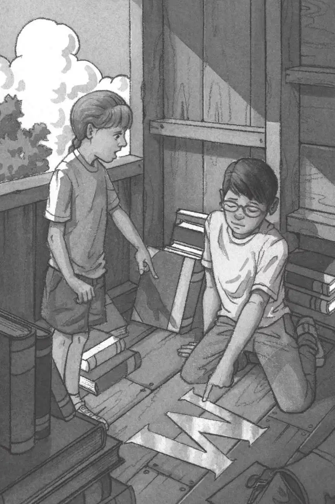
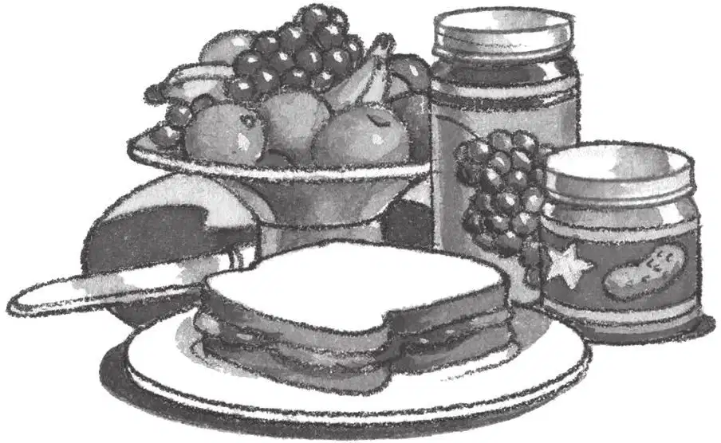

上午的阳光透过树屋的窗户照进来，影子在树屋的墙上和天花板上摇晃。
杰克深深吸了口气，树屋又回到蛙溪了。
“不知道妈妈午饭做了什么。”安妮望着窗外说。
杰克笑着说：“午饭、妈妈、家，这一切听上去是多么真实、安宁和亲切啊。”
“我希望是花生酱和果冻三明治。”杰克又说。
“天哪，这地方太乱了，”安妮说，“我们最好把它收拾得整齐一些，万一M回来了呢！”
杰克几乎把M给忘记了。
“我们会见到M吗？”杰克暗自想，“树屋里所有的书似乎都是这个人的。”
“我们把埃及书放在这摞书的最底下吧。”安妮说。
“好主意。”杰克说。他需要好好休息一下，才能再去参观古代的陵墓。
“我们把恐龙书放在埃及书上面。”安妮说。
“好啊。”杰克说。他需要休息很长很长时间，才能再去拜访雷克斯霸王龙。
“骑士和城堡书可以放在这摞书的最顶上。”安妮说。
杰克点点头，笑了。他愿意想起骑士和城堡书封面上的那名骑士，因为他就像自己的朋友一样。
“杰克，你看！”安妮指着树屋的木地板。
“什么？”杰克问。
“你自己看吧。”
杰克走到安妮身边，低下头来看，可什么也没有看见。
“你把头稍微转过去一点儿，”安妮说，“让光线正好照在那上面。”
杰克把脑袋偏向一边，发现地板上有个什么东西在闪闪发亮。
他把脑袋又偏了偏，这下终于看清楚了。
是字母M！它正在阳光下闪烁着。
毫无疑问，树屋是属于M的。
杰克用一根手指碰了碰字母M，他感到皮肤微微有点儿刺痛。

树叶在颤抖，风变大了。
“我们赶紧回家吧。”杰克说。
他抓起背包，和安妮一起爬下了绳梯。
刚落到地面，杰克就听见灌木丛里传来一个声音。
“谁在那儿？”他大声问。
树林里安静下来。
“我明天就把金勋章拿回来！”杰克大声说，“还有那个书签，两样都拿来。”
“你在跟谁说话？”安妮问。
“我感觉M就在附近。”杰克压低声音说。
安妮吃惊地睁大眼睛问：“我们要去找M吗？”
可是就在这个时候，远处传来了妈妈的声音：“杰克！安妮！”
杰克和安妮往树林里看了看，然后转脸望着对方。
“明天我们再来！”他们异口同声地说。
然后他们一口气跑出树林。
跑过街道。
跑过院子。
跑进家门和厨房。
一直跑到妈妈的怀里。
妈妈正在做花生酱和果冻三明治呢。
